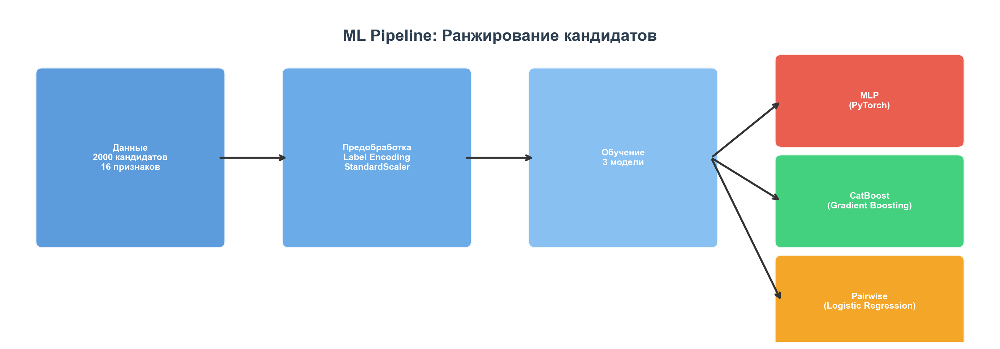
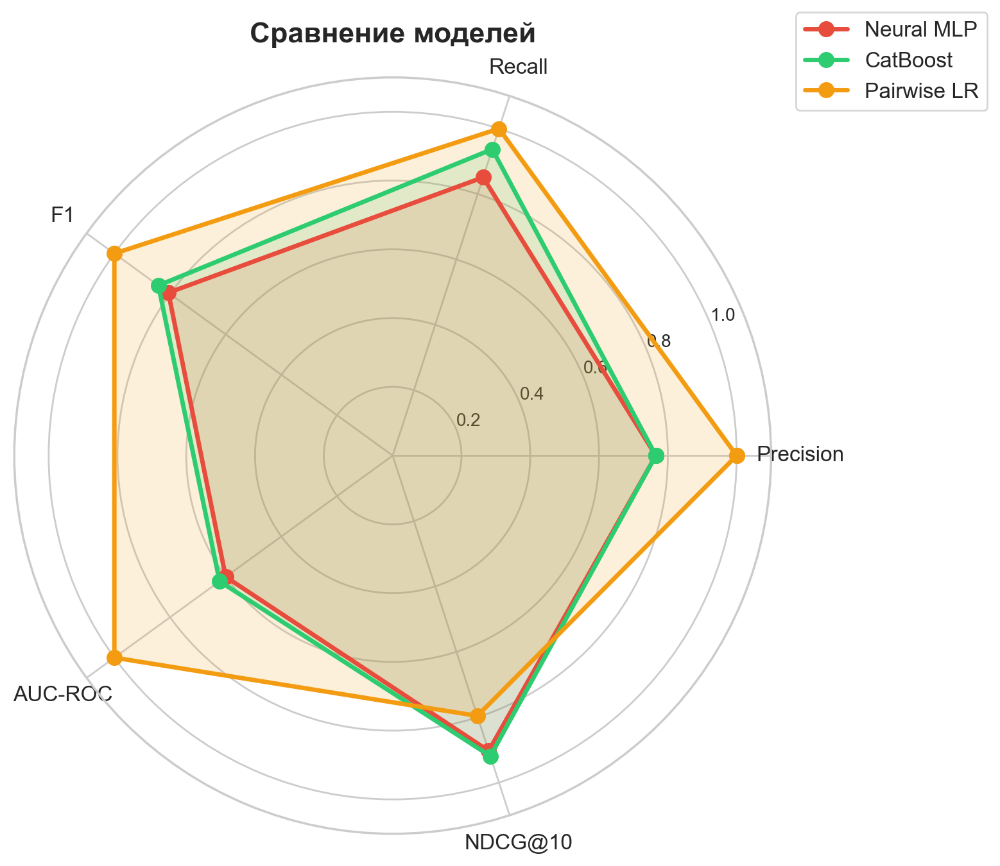
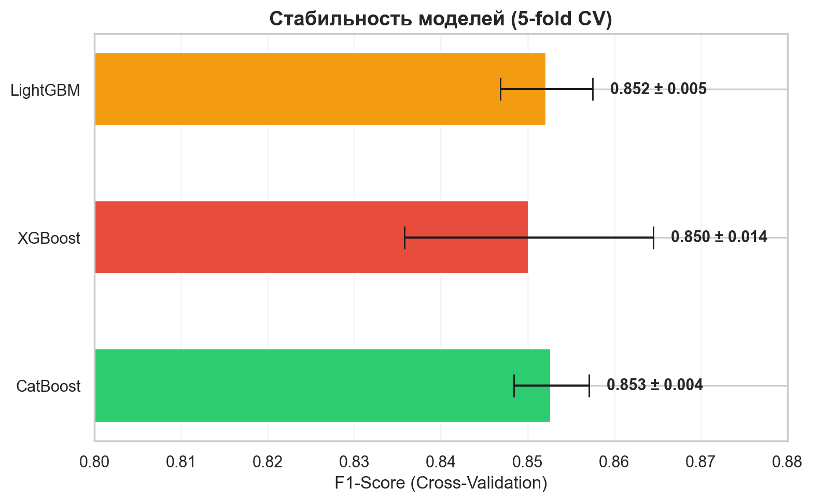
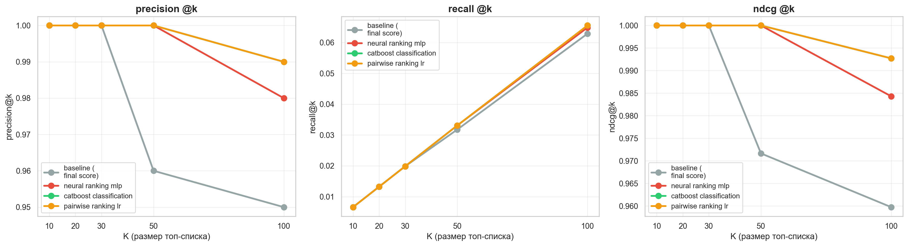
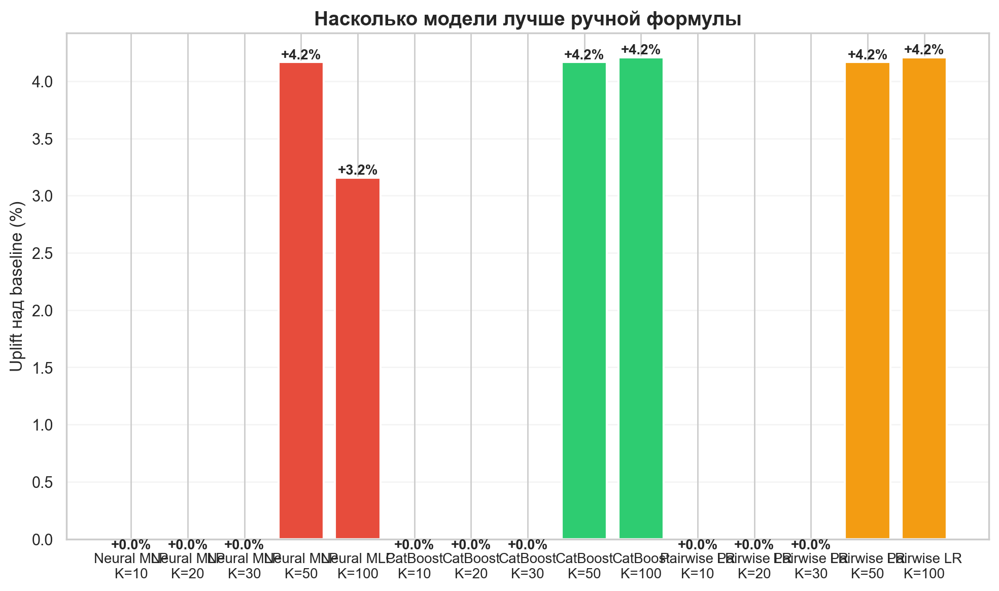
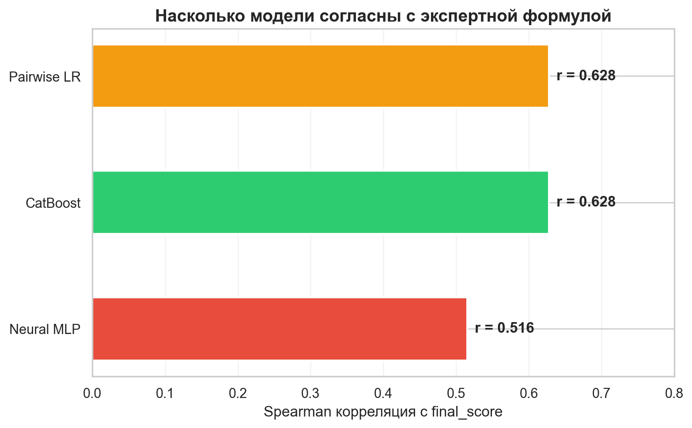
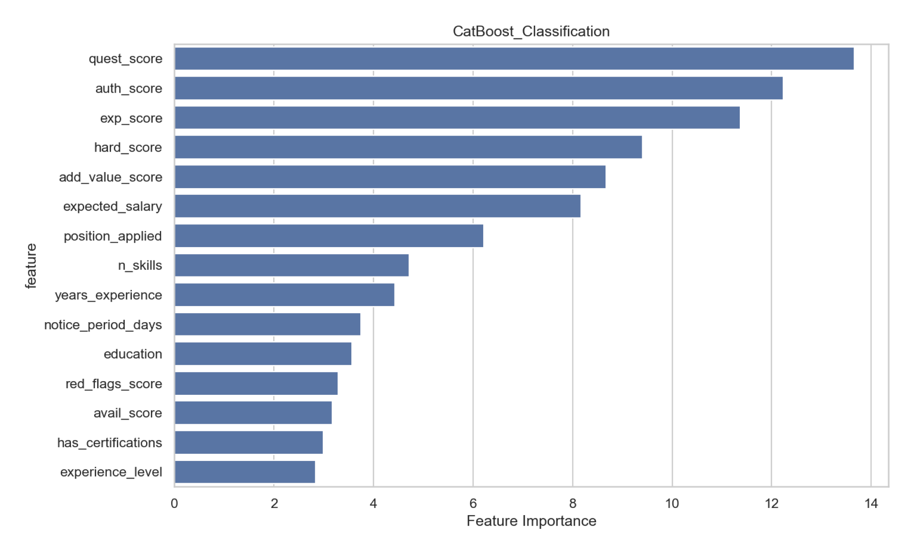
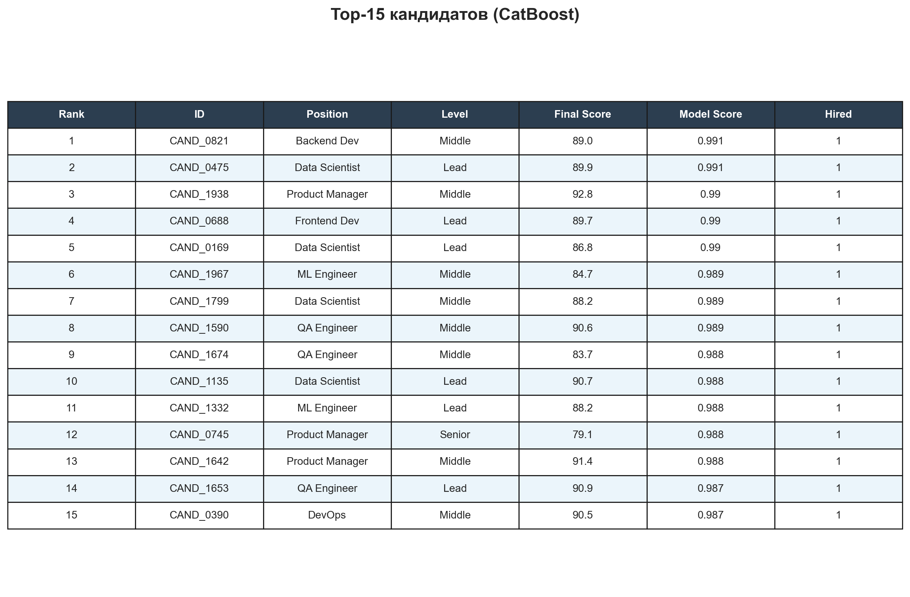

Автоматизация найма с помощью машинного обучения
Автоматизировать процесс найма: ML-модель оценивает кандидатов по 7 критериям и выдаёт топ-30 лучших, чтобы HR не просматривал тысячи анкет вручную.
| Критерий | Вес | Что оценивает |
|---|---|---|
| Relevance & Depth of Experience | 25% | Релевантность опыта вакансии |
| Hard Skills Match | 20% | Совпадение технических навыков |
| Quality of Questionnaire Answers | 22% | Глубина и конкретность ответов |
| Authenticity & AI-Check | 12% | Не сгенерированы ли ответы ИИ |
| Red Flags & Consistency | 8% | Противоречия, ложь |
| Availability & Logistics | 5% | Готовность выйти на работу |
| Education & Certificates | 8% | Образование, сертификаты |

Данные (2000 кандидатов) → Предобработка → 3 модели → Ранжирование → Top-30
Как работает: Нейросеть с 4 слоями (128→64→32→1). Кандидат проходит через слои, каждый извлекает закономерности. На выходе — вероятность найма.
Аналогия: 4 HR-менеджера последовательно смотрят анкету, каждый добавляет своё мнение.
Задача: Классификация — предсказать is_hired (нанят / не нанят).
Как работает: 300 «деревьев решений» учатся на ошибках друг друга. Первое дерево принимает решение → второе исправляет его ошибки → третье исправляет второе → и так 300 раз.
Аналогия: 300 стажёров-рекрутеров, каждый учится на ошибках предыдущих. Вместе — команда экспертов.
Задача: Классификация — предсказать is_hired.
Как работает: Берёт двоих кандидатов и отвечает: «кто лучше?» Не оценивает по отдельности — только сравнение пар.
Аналогия: Турнир по теннису. Не нужен абсолютный рейтинг — важно, кто кого побеждает.
Задача: Learning to Rank — ранжирование через попарные сравнения.

| Метрика | Neural MLP | CatBoost ⭐ | Pairwise LR |
|---|---|---|---|
| Precision | 0.765 | 0.765 | 1.000 |
| Recall | 0.851 | 0.937 | 1.000 |
| F1-Score | 0.806 | 0.842 | 1.000 |
| AUC-ROC | 0.600 | 0.622 | 1.000 |
| NDCG@30 | 0.903 | 0.919 | 0.796 |
| Spearman vs формула | 0.516 | 0.628 | 0.628 |

Все модели стабильны (разброс < 2%). CatBoost — самый стабильный: F1 = 0.853 ± 0.004.


Ключевой результат: На больших списках (K=100) CatBoost находит на 4.2% больше реально нанятых кандидатов, чем ручная формула.

Модели НЕ видели final_score при обучении. Но CatBoost и Pairwise лучше всего воспроизводят логику формулы (r = 0.63).


Все 15 кандидатов в топе реально наняты (is_hired = 1). Средний final_score = 87.2.
Формула — это линейная комбинация: 0.25×A + 0.20×B + .... Она не учитывает взаимодействия признаков.
Модели ловят неочевидные связи: «если опыт средний, но ответы на анкету отличные → скорее всего наймут». Именно поэтому на K=100 модели находят больше реально нанятых.
Вместо ручного просмотра 2000 анкет → модель автоматически выдаёт топ-30. HR тратит время только на финальных кандидатов.